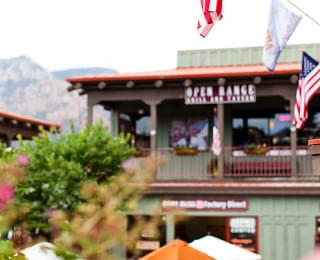

Главная страница Sedona
Промо
Седона — небольшой городок в Аризоне, заслуживающий большего!
Рассмотрим 5 причин, по которым Седона круче, чем Гранд Каньон!
Причины ехать
Настоящий
городокСедона не аттракцион для туристов, там течет своя жизнь
 Жилье
Рекомендуем пожить в настоящем мотеле, все как в кино!
Сувениры
Не только китайского,
но и местного производства!Еда
Всегда заказывайте фирменный бургер,
вы не разочаруетесь!
Там есть
мост дьяволаДа, по нему можно пройти!
Если вы осмелитесь, конечно
Небольшая
площадьВсе интересные места находятся очень близко
Красивая
дорогаЕхать в Седону из Лас‑Вегаса совсем
не скучно!Мало
туристовБольшинство едет в Гранд Каньон и толпится там
Заинтересовались?
Укажите предполагаемые даты поездки,
и мы покажем вам лучшие предложения гостиниц в Седоне